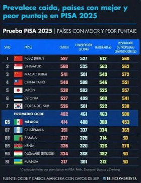
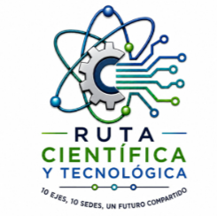
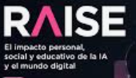
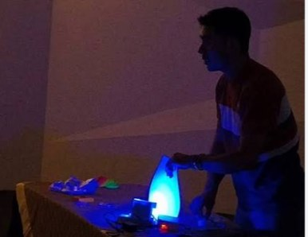

Septiembre fue un mes de proyección para el Departamento de Ciencias: una postura pública sobre la enseñanza de las matemáticas, alianzas de investigación con universidades de Chile, una nueva columna de divulgación, aportes a la agenda científica de Puebla y actividades para niñas, niños y estudiantes.
Rueda de prensa · 10 de septiembre
Transformar la enseñanza de las matemáticas ante los resultados de PISA
En rueda de prensa con especialistas de México y Chile, el Dr. Damián Emilio Gibaja Romero, director del Departamento de Ciencias, expuso el rezago que presentan los estudiantes en matemáticas y la urgencia de transformar su enseñanza.
Es el retraso en matemáticas que presentan los estudiantes, según lo expuesto en la rueda de prensa.
Lo acompañaron como profesores visitantes el Dr. Octavio Martínez Baltodano, profesor investigador de la Universidad Autónoma de Chile, quien destacó el papel de las matemáticas en la movilidad social, y la Dra. Haydée Fonseca Mairena, decana de la Universidad Católica del Maule, quien propuso metodologías que ayuden a comprender y aplicar las matemáticas.

Internacionalización · 22 de septiembre
UPAEP y universidades de Chile consolidan un modelo de investigación colaborativa
La UPAEP, la Universidad Católica del Maule y la Universidad Autónoma de Chile consolidaron un modelo de trabajo conjunto para desarrollar investigación de alto impacto y postular a fondos internacionales. El equipo aplica la economía matemática al diseño de políticas públicas sobre informalidad laboral y asignación de recursos.
- Financiamiento
- Fondos FOBI y proyectos Fondecyt de la ANID
- Convocatorias
- BID, sobre política fiscal, género e informalidad en México y Colombia
- Proyecto
- Idea FONDEF, encabezado por la UPAEP, orientado a equipamiento para baterías de vehículos eléctricos
- Coordinación
- Dr. Damián Emilio Gibaja Romero y Dra. Haydée Fonseca Mairena
- Resultados
- Publicaciones en la revista Economic Systems, conferencias, intercambio docente y metodología COIL
Divulgación científica
Arranca Espacio con(s)Ciencia, la columna del Departamento en UPRESS
En septiembre se puso en marcha Espacio con(s)Ciencia, una columna colaborativa publicada en UPRESS como espacio de divulgación científica. Su propósito es acercar a la comunidad universitaria a temas de física, química, matemáticas y estadística vinculados con el trabajo académico y de investigación de los profesores del Departamento.
Cómo la física hace posibles los sensores que hoy vigilan el cumplimiento de las reglas, protegen la integridad de los atletas y apoyan la estrategia deportiva.
Leer en UPRESSAnaliza la reciente propuesta de solución, construida con inteligencia artificial, a uno de los Problemas del Milenio, y los cuestionamientos éticos sobre autoría, uso de recursos y el lugar de la persona en la investigación matemática.
Vinculación con el entorno
Ruta Científica, Tecnológica y de Innovación Puebla 2050: uso ético de la IA
El Departamento de Ciencias organizó la mesa «Uso ético de la inteligencia artificial», en la que participaron académicos y tomadores de decisiones de la industria.
Como resultado, el Departamento entregó un diagnóstico sobre los principales retos, oportunidades y áreas de atención para promover un uso ético de la inteligencia artificial en Puebla. El reporte se entregó a la iniciativa Prometheus para su presentación ante el Congreso del Estado de Puebla.

Inteligencia artificial
El Departamento de Ciencias participa en el Seminario RAISE
El Dr. Damián Emilio Gibaja Romero participó, como integrante del Grupo de Investigación RAiSE, en la primera sesión del seminario «RAISE: Perspectivas sobre la Inteligencia Artificial», junto con académicos de la Vicerrectoría de Ciencias de la Salud y de Formación Humanista.
La sesión fue inaugurada por Carlos Mauricio Águila Cervera, vicerrector de Docencia y líder del proyecto RAiSE.

Resultados de investigación
Publicación en la revista internacional Molecules
La Dra. Zaida Nelly Juárez, profesora investigadora del Departamento de Ciencias y miembro del SNII, publicó un artículo sobre la caracterización fitoquímica de extractos de Tradescantia pendula.
Molecules, vol. 31, artículo 3000.
Ciencia para niñas y niños
«El show de la luz» llega a San Gregorio y al Museo Regional de Cholula
El Dr. Pablo Marco Trejo García realizó la actividad de divulgación «El show de la luz», dirigida a niñas y niños de 6 a 11 años, en dos sedes: la biblioteca de la comunidad de San Gregorio, el 6 de septiembre, y el Museo Regional de Cholula, el 26 de septiembre.

Talleres · 6 de septiembre
«El reto de los sentidos»: taller de evaluación sensorial
La Dra. Flora Leticia López Pérez impartió a estudiantes universitarios el taller «El reto de los sentidos, evaluación sensorial: color, aroma, sabor y textura».
Próximamente
Agenda de octubre
- 3Octubre«Jugando con la luz»
Divulgación para niñas y niños en San Antonio Cacalotepec · Mtro. Mario Enrique López Medina
- 13OctubrePremios Nobel de Física y Química
Rueda de prensa en UPRESS · Mtro. Mario Enrique López Medina y Dr. Pablo Marco Trejo García
- OctDurante el mesCongreso Nacional de Física 2026
Ensenada, B. C. · Presentación de pósteres con estudiantes
- OctCada semanaEspacio con(s)Ciencia
Nuevas columnas cada semana en UPRESS